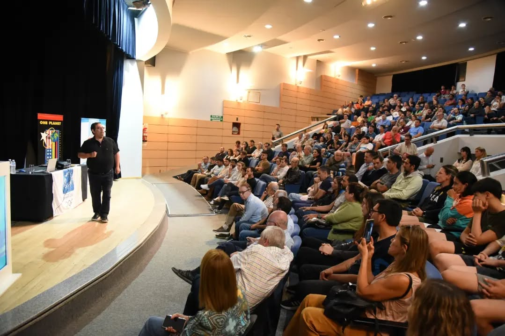

Dependencia del fundador
Las decisiones importantes y cotidianas vuelven siempre a la misma persona. El crecimiento queda limitado por su agenda.

Gerencia externa de Recursos Humanos
Ordenamos roles, procesos y liderazgo para que tu equipo decida mejor, la operación gane autonomía y vos recuperes tiempo para dirigir el negocio.
Diagnóstico gratuito · 5 preguntas · resultado inmediato
El costo invisible del crecimiento
No suele faltar compromiso. Falta una estructura que transforme el esfuerzo cotidiano en decisiones, coordinación y resultados sostenibles.
Las decisiones importantes y cotidianas vuelven siempre a la misma persona. El crecimiento queda limitado por su agenda.
Los problemas suben en lugar de resolverse. Falta criterio, claridad de rol y un sistema para tomar decisiones.
Las salidas cuestan conocimiento, energía y rentabilidad. El desafío es atraer, desarrollar y retener con método.
La operación depende de personas clave y costumbres. Sin acuerdos claros, la calidad se vuelve impredecible.
Reuniones eternas, chats saturados y malentendidos que consumen foco. La información debe llegar con propósito.
Sabés que la empresa puede dar más. El siguiente paso es alinear talento, procesos y prioridades para hacerlo posible.
¿Es para tu empresa?
La Gerencia Externa de RR. HH. es especialmente útil cuando la empresa necesita profesionalizar la gestión de personas, pero todavía no requiere —o no quiere sostener— un departamento completo.
Servicio principal
Nos integramos a la realidad de la empresa, priorizamos los problemas críticos y acompañamos la implementación. No entregamos un informe para guardar: construimos capacidad interna.
Dirección, método y seguimiento para ordenar la gestión de personas y conectarla con los objetivos del negocio.
Programas y coaching para mejorar delegación, feedback, conversaciones difíciles y toma de decisiones.
Perfiles, búsquedas, integración, desempeño y planes de desarrollo vinculados con necesidades reales.
Acuerdos de trabajo, reuniones, circuitos de información y prácticas que reducen fricción y urgencias.
Liderazgo, neurociencias, ventas, cambio y rendimiento bajo presión, aplicados al contexto de la organización.
Cómo trabajamos
Cada empresa tiene una historia y una dinámica propias. Por eso el proceso se adapta al contexto, manteniendo una secuencia clara.
Entrevistas, información disponible y lectura de la estructura, los liderazgos y los principales puntos de fricción.
Definimos pocos focos críticos, responsables, indicadores y un plan de intervención realista.
Trabajamos con dueños, líderes y equipos para convertir las decisiones en nuevas prácticas de gestión.
Medimos avances, corregimos desvíos y transferimos capacidades para que la mejora pueda sostenerse.
Método LÍDER®
Nuestro marco integra dirección empresarial, gestión del talento, coaching y neurociencias aplicadas. La meta no es motivar por un día, sino modificar la forma de decidir y trabajar.
Desarrollamos referentes capaces de dar dirección, generar confianza y sostener conversaciones difíciles.
Alineamos personas, procesos y cultura con las prioridades reales de la organización.
Convertimos capacidades críticas en hábitos de trabajo, roles claros y aprendizajes aplicables.
Acompañamos el cambio con indicadores, seguimiento y ajustes para que la transformación no quede en una intención.
Medimos avances para que la gestión de personas produzca valor visible para el negocio.
Trayectoria y confianza
Empresas, universidades, instituciones públicas y equipos de alta competencia forman parte de una trayectoria construida en escenarios diversos y exigentes.
Dirección estratégica
Consultor en Recursos Humanos, liderazgo y neurociencias aplicadas. Su diferencial es combinar formación ejecutiva con experiencia concreta en la conducción de sistemas, equipos e instituciones complejas.
Actualmente supervisa 254 escuelas secundarias y 22 Centros de Educación Física en Entre Ríos, es profesor titular de Neurociencias en la UCU y coach en neurociencias de selecciones nacionales.
Las empresas cambian de verdad cuando sus personas cuentan con dirección, estructura y confianza para decidir.
Fabricio Martínez · Consultor estratégicoHerramienta sin costo
Respondé cinco preguntas y obtené una primera lectura sobre el principal foco de trabajo de tu organización.
Preguntas frecuentes
Una buena intervención empieza por entender el contexto, no por aplicar recetas.
Primero relevamos el desafío y las prioridades. Luego definimos un plan de intervención para ordenar procesos, desarrollar líderes y medir avances, sin crear una estructura fija desde el inicio.
No necesariamente. Puede asumir la dirección estratégica cuando no existe un área interna o complementar al equipo administrativo, aportando método, prioridades y acompañamiento especializado.
Con empresas familiares, pymes, industrias, comercios, instituciones educativas, organismos y organizaciones deportivas que necesitan fortalecer su gestión de personas.
Depende del punto de partida y de los objetivos. Luego del diagnóstico inicial proponemos etapas, dedicación e indicadores concretos para que la empresa pueda decidir con claridad.
La consultora tiene base en Entre Ríos y acompaña proyectos en Argentina y en otros países según la necesidad de cada organización.
Primera conversación
Contanos brevemente qué está pasando. La primera reunión es exploratoria: sirve para comprender el desafío, establecer prioridades y determinar si nuestra intervención puede aportar valor.